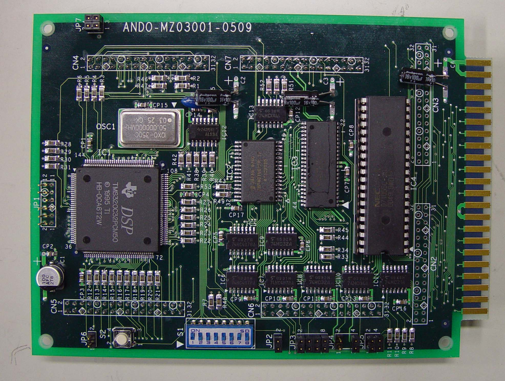

デジタル信号処理ボードの写真です。
■プロセッサー:DSP TMS320C32 TEXAS INSRUMENTS製
クロック:50 MHz
データ幅:32 bit
内部RAM:512\(\times\)32 bit
通信ポート:serial(DMA)\(\times\)2
割込み:4 ch
■メモリー(ROM):HN58C1001 RENASAS製
データ幅:8 bit
容量:131072\(\times\)8 bit
■メモリー(RAM):HM6216255HC 日立製
データ幅:16 bit
容量:262144\(\times\)16 bit
■外部インターフェース:\(\mu\) PD71055 NEC製
入出力ポート:3 port\(\times\)8 bit パラレル